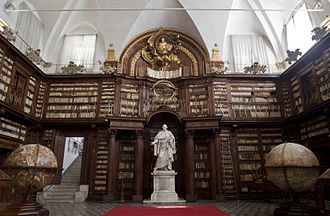
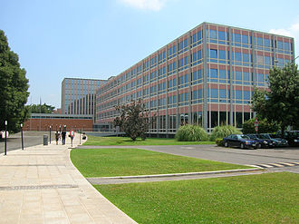

Rome is a nationwide and major international centre for higher education, containing numerous academies, colleges and universities. It boasts a large variety of academies and colleges, and has always been a major worldwide intellectual and educational centre, especially during Ancient Rome and the Renaissance, along with Florence.[119] According to the City Brands Index, Rome is considered the world's second most historically, educationally and culturally interesting and beautiful city.
Rome has a large number of universities and colleges. Its first university, La Sapienza (founded in 1303), is one of the largest in the world, with more than 140,000 students attending; in 2005 it ranked as Europe's 33rd best university[121] and in 2013 the Sapienza University of Rome ranked as the 62nd in the world and the top in Italy in its World University Rankings.[122] and has been ranked among Europe's 50 and the world's 150 best colleges.[123] In order to decrease the overcrowding of La Sapienza, two new public universities were founded during the last decades: Tor Vergata in 1982, and Roma Tre in 1992. Rome hosts also the LUISS School of Government, Italy's most important graduate university in the areas of international affairs and European studies as well as LUISS Business School, Italy's most important business school. Rome ISIA was founded in 1973 by Giulio Carlo Argan and is Italy's oldest institution in the field of industrial design.
Rome contains also a large number of pontifical universities and other institutes, including the British School at Rome, the French School in Rome, the Pontifical Gregorian University (the oldest Jesuit university in the world, founded in 1551), Istituto Europeo di Design, the Scuola Lorenzo de' Medici, the Link Campus of Malta, and the Università Campus Bio-Medico. Rome is also the location of two American Universities; The American University of Rome[124] and John Cabot University as well as St. John's University branch campus, John Felice Rome Center, a campus of Loyola University Chicago and Temple University Rome, a campus of Temple University.[125] The Roman Colleges are several seminaries for students from foreign countries studying for the priesthood at the Pontifical Universities.[126] Examples include the Venerable English College, the Pontifical North American College, the Scots College, and the Pontifical Croatian College of St. Jerome.
Rome's major libraries include: the Biblioteca Angelica, opened in 1604, making it Italy's first public library; the Biblioteca Vallicelliana, established in 1565; the Biblioteca Casanatense, opened in 1701; the National Central Library, one of the two national libraries in Italy, which contains 4,126,002 volumes; The Biblioteca del Ministero degli Affari Esteri, specialised in diplomacy, foreign affairs and modern history; the Biblioteca dell'Istituto dell'Enciclopedia Italiana; the Biblioteca Don Bosco, one of the largest and most modern of all Salesian libraries; the Biblioteca e Museo teatrale del Burcardo, a museum-library specialised in history of drama and theatre; the Biblioteca della Società Geografica Italiana, which is based in the Villa Celimontana and is the most important geographical library in Italy, and one of Europe's most important;[127] and the Vatican Library, one of the oldest and most important libraries in the world, which was formally established in 1475, though in fact much older and has 75,000 codices, as well as 1.1 million printed books, which include some 8,500 incunabula. There are also a large number of specialist libraries attached to various foreign cultural institutes in Rome, among them that of the American Academy in Rome, the French Academy in Rome and the Bibliotheca Hertziana – Max Planck Institute of Art History, a German library, often noted for excellence in the arts and sciences;